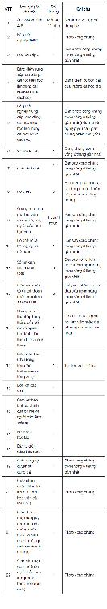

Các loại giấy tờ cần chuẩn bị trong bộ hồ sơ đăng ký du học Hàn Quốc:

Những lưu ý về hồ sơ:
Cục Lãnh sự (Bộ Ngoại giao). Địa chỉ: 40 Trần Phú, Ba Đình, Hà Nội.
Hoặc Sở Ngoại vụ Thành phố Hồ Chí Minh (Bộ Ngoại giao). Địa chỉ: 184 Bis Pasteur, Quận 1, thành phố Hồ Chí Minh.
Thời gian nộp hồ sơ và nhận kết quả: Từ thứ Hai đến thứ Sáu và sáng thứ Bảy, trừ các ngày lễ tết.
Kinh nghiệm viết bài giới thiệu bản thân (자기소개서)
Theo như các cuốn sách tôi đã đọc và tham khảo các bài mà ứng viên nộp cho học bổng chính phủ vào trường tôi (tôi may mắn có cơ hội làm việc ở văn phòng quốc tế của trường nên thường xuyên được giao cho đọc và phân loại tài liệu của các ứng viên học bổng chính phủ), các bạn ứng viên đều dùng đuôi ㅂ/습니다 cho bài viết về giới thiệu bản thân, kế hoạch học tập…
Một điều cần tránh nhất trong phần viết nội dung mà các thầy cô luôn nhắc đến đó là 표절 dịch nôm na là “đạo văn”. Đạo văn có nhiều kiểu khác nhau như đạo từ ngữ đẹp (khi mình học tiếng Hàn hay có mấy công thức mà ốp vào bài nào cũng được), đạo ý tưởng, thậm chí copy nguyên bài của người khác và đổi đi một vài từ…
Sau đó các bạn sẽ bắt đầu một cuộc “cách mạng” mà tôi gọi vui đó là “truy tìm bản thân”, hồi tưởng lại mình trong quá khứ, cuộc sống hiện tại và hình dung tương lai một cách cụ thể nhất. Đồng thời nghĩ đến một chủ đề mà bạn sẽ chọn làm xuyên suốt để viết bài, một chủ đề mà bạn có thể nêu ra được quá trình phát triển của bản thân, môi trường sống và học tập đã hình thành nên tính cách con người bạn sao, điểm mạnh – điểm yếu của bạn là gì …
Thứ tự các danh mục trong bài giới thiệu sẽ là: quá trình trưởng thành của bản thân, giới thiệu qua về gia đình, đặc biệt chú trọng về học vấn của bản thân, kinh nghiệm có liên quan đến học vấn, ưu – nhược điểm của bản thân, các hoạt động xã hội đã tham gia, tại sao bạn lại muốn nộp hồ sơ vào trường… Trong lúc làm việc ở văn phòng quốc tế của trường, tôi có cơ hội được xem bảng chấm điểm của một số học bổng chính phủ và tôi nhận thấy phần được đặc biệt chú ý là: Ứng viên đã và sẽ làm gì để có thể trở thành cầu nối, đẩy mạnh mối quan hệ giữa hai nước Việt Nam và Hàn Quốc? Sau đó bạn nên đưa ra kế hoạch học tập trong tương lai: Trường và khoa bạn muốn học sẽ đóng vai trò ra sao trong kế hoạch học tập, nghề nghiệp cũng như đóng góp cho xã hội của bạn sau này? 5-10 năm sau bạn sẽ thay đổi ra sao? Mục tiêu phấn đấu thế nào? Bạn sẽ định học gì, nghiên cứu gì, năng lực tự tìm tòi, nghiên cứu của bạn và nỗ lực của bạn ra sao?… Bạn phải nhấn mạnh được giá trị của bạn cũng như đóng góp cho cộng đồng trong tương lai thế nào?
Viết xong bạn nên đọc lại, nhờ người biết tiếng đọc để hoàn thiện. Bạn nên viết câu ngắn gọn và súc tích, dễ hiểu, không sai chính tả… đặc biệt trong tiếng Hàn tôi thấy nhiều bạn thường hay sai ở phần cách giữa các chữ (뛰어쓰기), đây là phần mà người Hàn cũng rất xem trọng. Một điểm nữa là bài giới thiệu bản thân cần khớp và liên kết với thư giới thiệu (추천서).